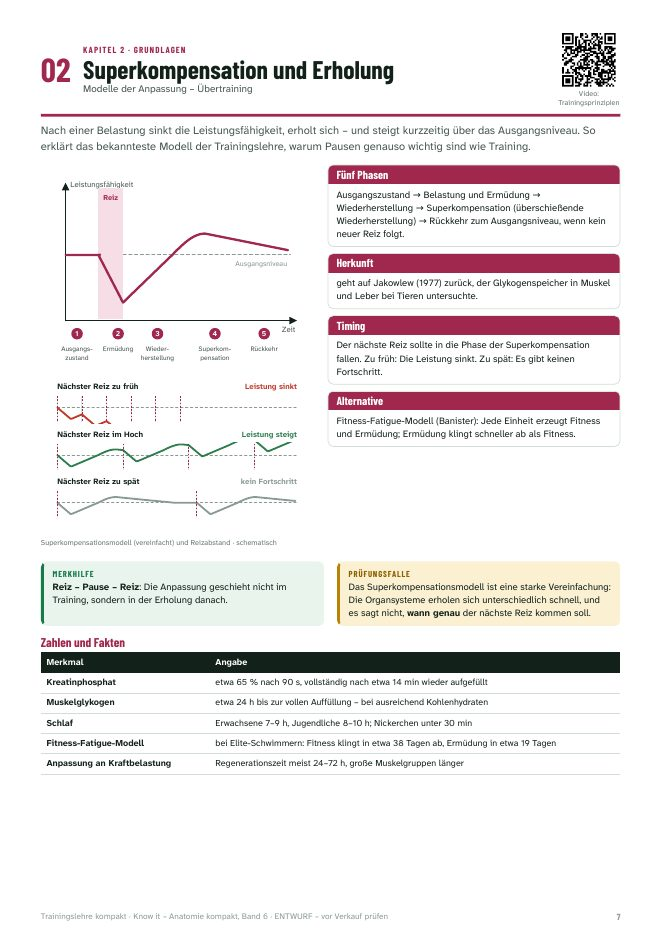
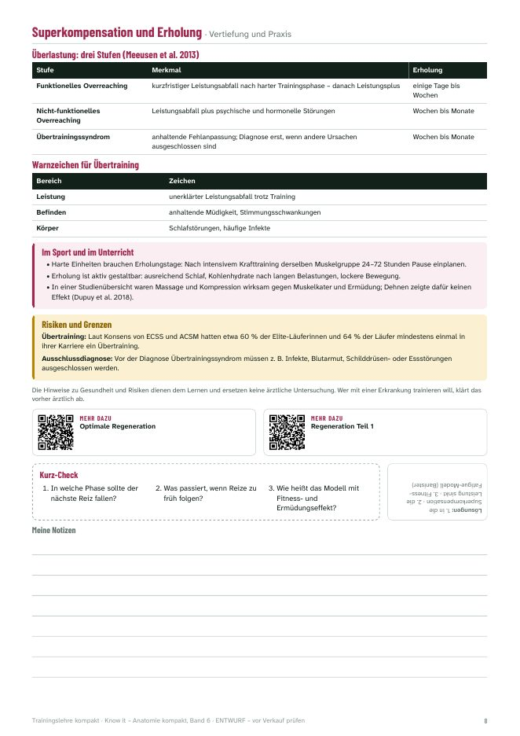
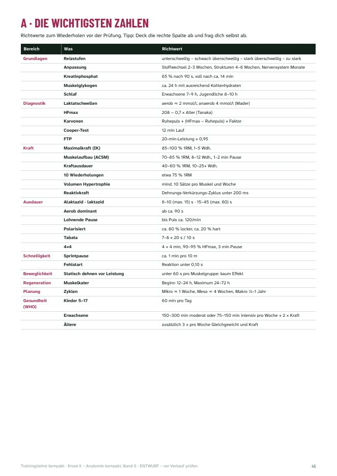
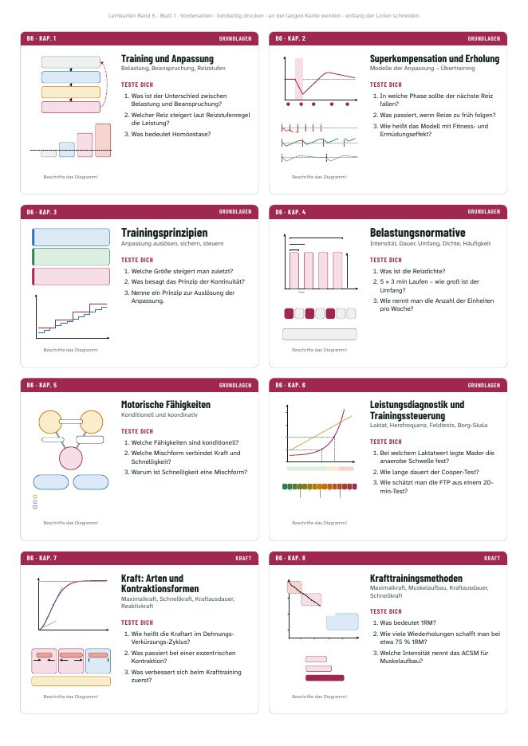

Anpassung und Trainingsprinzipien, Belastungsnormative, Kraft, Ausdauer, Schnelligkeit, Beweglichkeit, Koordination, Regeneration und Trainingsplanung – 20 Doppelseiten mit Diagrammen, Richtwerten, Transfer in den Sport und 60 Fragen zum Selbsttest.
17,90 €Sofort als PDF
20 Kapitel in fünf Teilen – Grundlagen, Kraft, Ausdauer, Schnelligkeit/Beweglichkeit/Koordination, Planung – jedes auf einer Doppelseite
Eigene Diagramme: Superkompensation, Laktatkurve, Energiebereitstellung, Periodisierung und mehr
Richtwerte für Intensität, Wiederholungen und Pausen – mit Hinweis, wo Lehrbücher abweichen
Transfer in Sport und Unterricht: Cooper-Test, Pulssteuerung, Zirkel, EMOM, SMART-Ziele
Risiken und Grenzen kurz erklärt (Übertraining, Pressatmung, frühe Spezialisierung), Videos per QR-Code
60 Fragen zum Selbsttest, Zahlen-Übersicht und Glossar
Inklusive: 28 Lernkarten zum Ausdrucken (Diagramm und Fragen vorn, Antworten hinten)
Für Studierende der Sportwissenschaft, Physiotherapie und Medizin, für Trainer:innen-Ausbildungen und für alle, die Trainingslehre für eine Prüfung brauchen.
Die Bände 1–5 erklären den Körper – dieser Band erklärt, wie man ihn trainiert: Prinzipien, Methoden und Planung, vom Schulsport bis zum Leistungstraining.
So sieht es innen aus

Links: Diagramm, Steckbrief, Merkhilfe, Prüfungsfalle, Zahlen und Fakten.

Rechts: Tabellen, Transfer in Sport und Unterricht, Risiken, Videos und Kurz-Check.

Die wichtigsten Zahlen auf einen Blick – ideal kurz vor der Prüfung.

Inklusive: 28 Lernkarten zum Ausdrucken und Ausschneiden.
Das steckt drin
1 · Training und Anpassung
Training ist regelmäßige Belastung mit einem Ziel: Der Körper wird aus dem Gleichgewicht gebracht – und passt sich an, damit ihn derselbe Reiz beim nächsten Mal weniger stört.
2 · Superkompensation und Erholung
Nach einer Belastung sinkt die Leistungsfähigkeit, erholt sich – und steigt kurzzeitig über das Ausgangsniveau. So erklärt das bekannteste Modell der Trainingslehre, warum Pausen genauso wichtig sind wie Training.
3 · Trainingsprinzipien
Trainingsprinzipien sind Leitlinien, die aus den Gesetzmäßigkeiten der Anpassung abgeleitet sind. Sie gelten für jedes Training – vom Schulsport bis zum Hochleistungssport.
4 · Belastungsnormative
Mit fünf Stellschrauben beschreibst du jede Trainingsbelastung genau – und kannst sie gezielt verändern.
5 · Motorische Fähigkeiten
Kraft, Ausdauer, Schnelligkeit, Beweglichkeit und Koordination sind die Grundbausteine jeder sportlichen Leistung. In der Praxis treten sie fast immer gemischt auf.
6 · Leistungsdiagnostik und Trainingssteuerung
Wer den Trainingszustand misst, kann Intensitäten gezielt festlegen und Fortschritte sichtbar machen – im Labor oder mit einfachen Feldtests.
7 · Kraft: Arten und Kontraktionsformen
Kraft ist die Fähigkeit des Nerv-Muskel-Systems, Widerstände zu überwinden, ihnen entgegenzuwirken oder sie zu halten. Welche Kraftart zählt, hängt von der Sportart ab.
8 · Krafttrainingsmethoden
Wie viel Gewicht, wie viele Wiederholungen, wie lange Pause? Je nach Ziel unterscheiden sich die Belastungsnormative im Krafttraining deutlich.
9 · Krafttraining in der Praxis
Gute Technik, ein stabiler Rumpf und die richtige Dosierung machen Krafttraining sicher – für Kinder genauso wie für Läuferinnen und Läufer.
10 · Ausdauer und Energiebereitstellung
Ausdauer ist die Widerstandsfähigkeit gegen Ermüdung und die Fähigkeit, sich schnell zu erholen. Welcher Energieweg dominiert, hängt von Dauer und Intensität ab.
11 · Ausdauermethoden
Vier Methoden, viele Varianten: Entscheidend sind Intensität, Dauer und Pausen. Die Wahl richtet sich nach Ziel und Trainingszustand.
12 · Intensität steuern
Wie hart soll eine Einheit sein? Zonenmodelle, Herzfrequenz und die Verteilung der Intensitäten über die Woche entscheiden mit über den Trainingserfolg.
13 · Schnelligkeit
Schnelligkeit ist die Fähigkeit, auf ein Signal schnellstmöglich zu reagieren und Bewegungen bei geringen Widerständen mit höchster Geschwindigkeit auszuführen.
14 · Beweglichkeit und Dehnen
Beweglichkeit ist die Fähigkeit, unterschiedliche Stellungen und Haltungen einzunehmen. Wie und wann du dehnst, entscheidet über den Effekt.
15 · Koordination
Koordination ist das Zusammenwirken von Nervensystem und Muskulatur bei gezielten Bewegungen. Sie entscheidet, wie gut Kraft und Ausdauer in eine Technik umgesetzt werden.
16 · Aufwärmen, Regeneration, Muskelkater
Gutes Aufwärmen verbessert die Leistung, gute Erholung macht Anpassung erst möglich – und Muskelkater ist kein Zeichen für ein gutes Training.
17 · Periodisierung und Trainingsplanung
Periodisierung ist die systematische Planung des Trainings, damit die beste Leistung zum gewünschten Zeitpunkt kommt.
18 · Langfristiger Leistungsaufbau
Spitzenleistung entsteht über viele Jahre. Kinder brauchen vielseitige Bewegung, altersgerechte Belastung und Geduld – keine verkleinerte Erwachsenenversion.
19 · Gesundheitssport und Bewegungsempfehlungen
Für die Gesundheit zählt jede Bewegung. Die WHO gibt klare Richtwerte für Kinder, Erwachsene und Ältere – mit Ausdauer, Kraft und bei Älteren Gleichgewicht.
20 · Moderne Trainingsformen
Viele neue Trainingsformen sind alte Methoden in neuem Gewand: Intervall- und Zirkeltraining mit klaren Regeln für Zeit und Wiederholungen.
Anhang zum Wiederholen
Die wichtigsten Zahlen auf einen Blick · Fachbegriffe von A bis Z · Quellen
Probier es aus
In der kostenlosen Leseprobe findest du die Einleitung, die Kapitel „Superkompensation und Erholung“ und „Krafttrainingsmethoden“ – komplett.